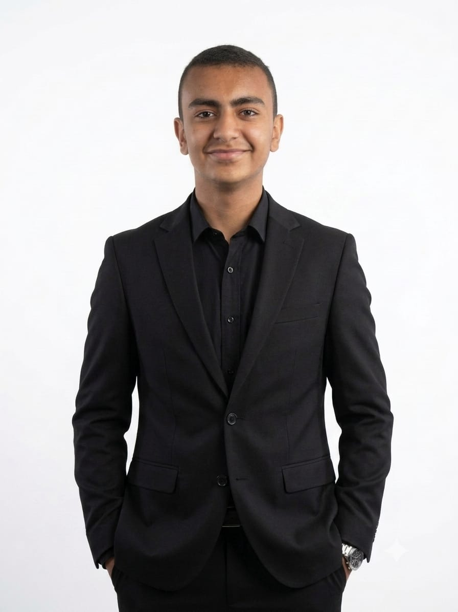
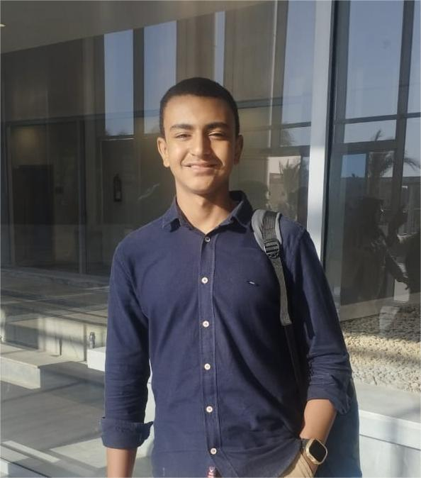

Mohamed Emad
Student Researcher | Embedded Systems & AI | STEM Education
I am an 11th-grade high school student exploring technical problems in embedded sensor integration, signal variability, and multi-agent simulation. Working alongside school teammates, I build hardware-software prototypes, test hypotheses through computer simulation, and facilitate open STEM workshops to help peer students access practical electronics education.

Mohamed Emad
Class of 2028 • El Minya STEM
Featured Projects & Investigations
Exploring reliability in bio-acoustic sensors, hands-free assistive hardware, multi-agent traffic simulation, and environmental monitoring. Every project explicitly outlines team roles, hardware stacks, and active limitations.
Awards, Finalist Standings & Academic Competitions
Every entry is strictly categorized to distinguish confirmed championship placements from competitive finalist status and verified academic participation. Unconfirmed claims are flagged with review tags.
Educational Leadership & Science Communication
Co-founding peer initiatives, developing hands-on electronics roadmaps with virtual labs, and interviewing senior graduates to help secondary students transition into STEM inquiry.
Research, Competition & Academic Timeline
A chronological trajectory distinguishing school-level science fairs from national qualifiers and international finalist evaluations.
Technical Skills & Applied Research Tooling
In place of arbitrary percentage progress bars or unverified "expert" ratings, each tool is framed strictly by where and how it was applied in actual secondary student research, physical prototypes, or workshop delivery.
Primary Evidence & Academic Verification
Every entry in this portfolio is linked to primary documentation. Each artifact explicitly states what it verifies, along with clear boundaries on what it does not establish.
About Mohamed Emad
A reflection on learning, testing hardware and simulation models, and supporting peers through collaborative STEM education.
I am currently in Grade 11 at El Minya STEM School in Egypt. My interest in engineering developed not through abstract theory, but through the discipline of troubleshooting physical circuits, evaluating sensor noise, and discovering why an initial design rarely functions as expected on the first test bench.
My research explorations center on two complementary areas: embedded sensor integration and multi-agent traffic simulation. In projects like GULP, I examine whether signal processing can isolate measurement artifacts in wearable bio-sensors; in BASIRA, my teammates and I prototyped a chest-worn assistive obstacle detector using an ESP32 and discrete ultrasonic sensing. In OptiWay, I turned to computer simulation in SUMO to model collective routing dynamics and evaluate emergency ambulance transit times across New Minya City.
Equally central to my high school experience is peer STEM education. Many eager secondary students across Egypt lack direct access to physical microcontrollers or laboratory kits. Through founding the MEC Club and developing the MEC STEM Hub, I helped structure virtual Tinkercad workshops where students can build, code, and simulate circuits online at zero financial barrier.
I do not consider myself a finished engineer or a medical researcher. I am an active high school student building scientific rigor, learning from experimental setbacks, refining my coding and statistical practices, and preparing for demanding university-level research in computer science and embedded systems.

STEM Campus Environment
Balancing rigorous curriculum requirements with laboratory prototyping and team collaborations.
Guiding Academic Philosophy
"Education is not preparation for life; education is life itself."— John Dewey (Inscribed at El Minya STEM entrance)
Contact & Academic Inquiries
Open for dialogue regarding secondary student research collaborations, international STEM exchange programs, or academic mentorship inquiries.
New Minya City, Minya Governorate, Egypt.
Secondary Stage (Grade 11, Academic Year 2026/2027).
MEC STEM Hub
mecstemhub.netlify.app
GitHub Profile
github.com/[to be linked by Mohamed]
linkedin.com/in/[to be linked by Mohamed]
MEC YouTube Channel
youtube.com/@[to be linked by Mohamed]
Send a Direct Academic Note
Messages are routed to Mohamed's student inbox. No commercial or marketing solicitations.